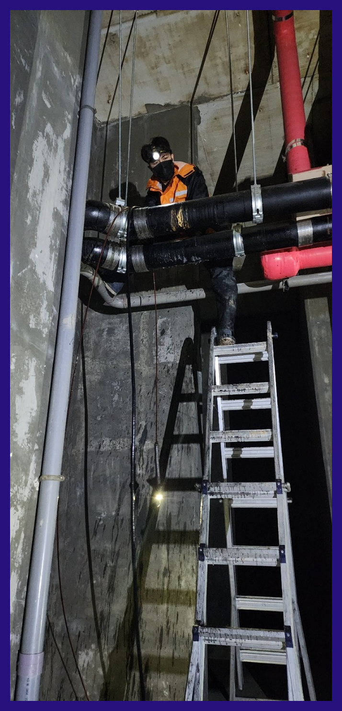
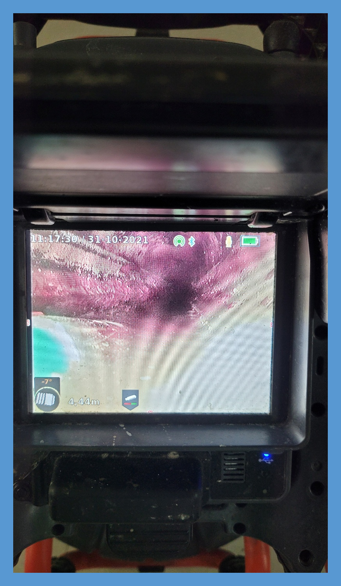
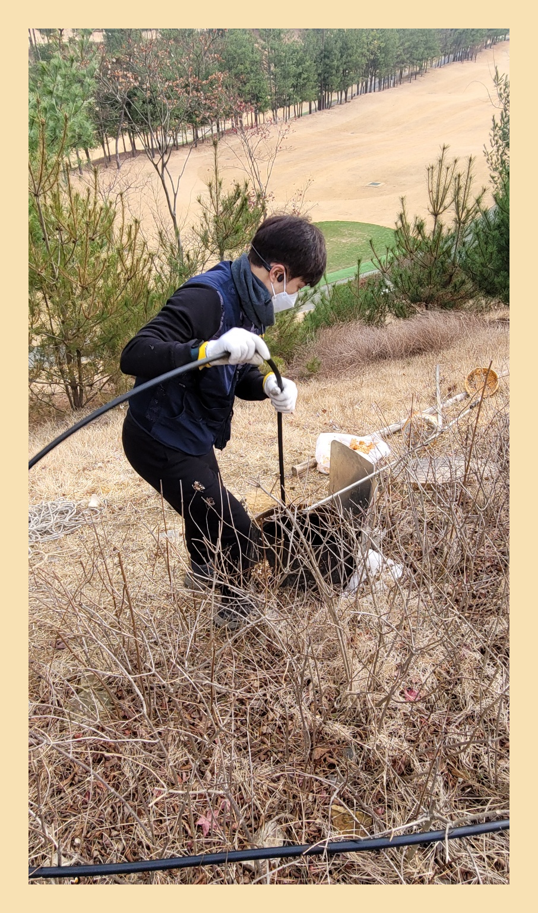
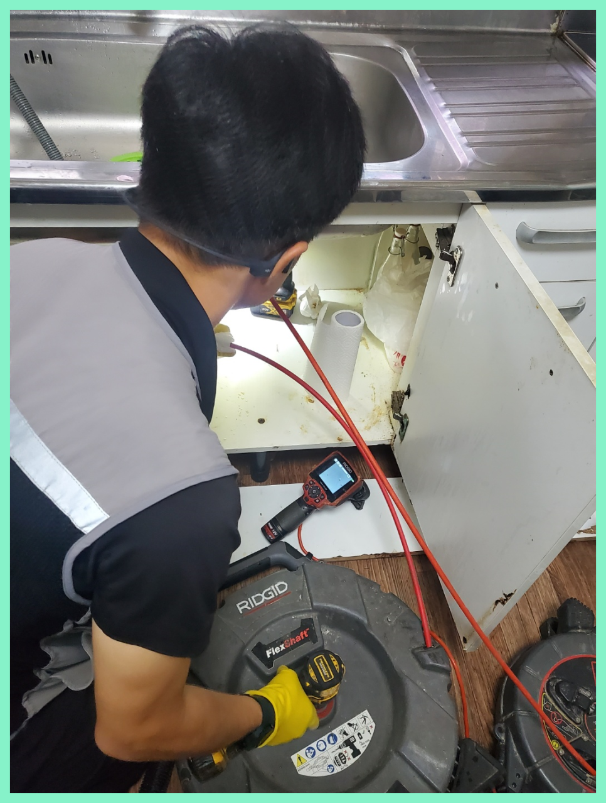
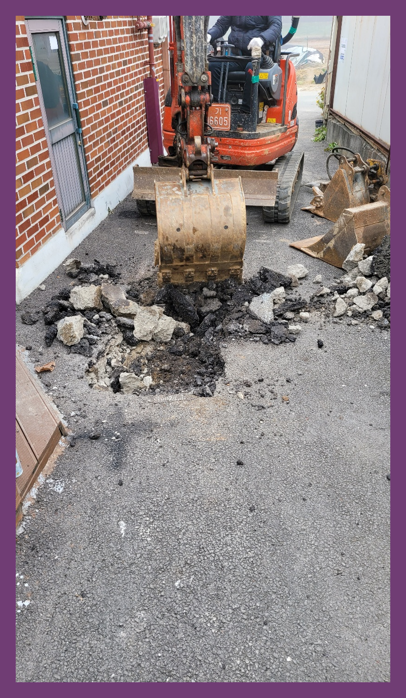
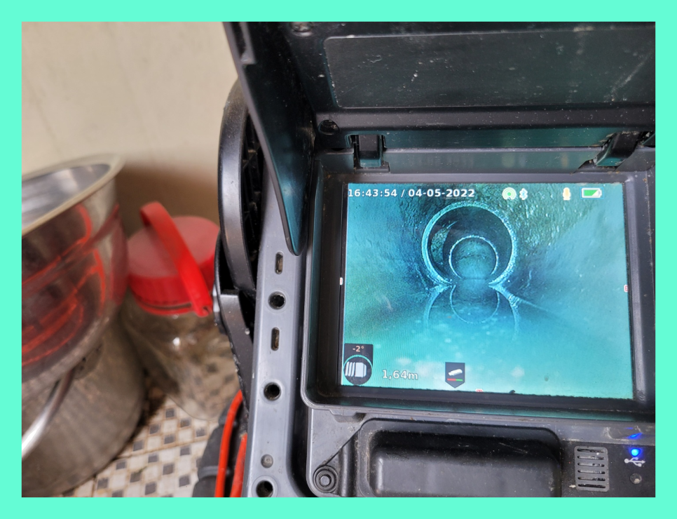

🏠 수지 성복동하수구막힘 풍덕천동 하수구뚫는 설비업체
용인 풍덕천동 싱크대막힘 전문 시공 후기

📋 작업 개요
- 위치: 용인 풍덕천동, 풍덕천동, 용인
- 서비스 유형: 싱크대막힘, 변기막힘, 하수구막힘, 배관막힘, 누수수리, 역류해결, 뚫는업체, 배관청소, 고압세척
- 작업 일시: 2023. 10. 19. 1:15
- 업체명: 하수구수사대 (010-5615-2118)
🔍 문제 상황
어서오세요
설비전문업체 "하수구수사대"를 찾아주셔서 감사드립니다.
우리가 살고 있는 곳의 하수가 막히게 되면 많은 고민이 되실 건데요 특히 물이 빠지지 않게 되면 불편함이 커질 수밖에 없는 것입니다. 이러한 막힘의 경우 저희에게 문의를 주시면 빠르게 달려가 해결해 드리고 있습니다.
배출관금방 해결되는 가벼운 경우도 있지만 문제 파악이 확실히 안되는 일은알아서 시도하기보단 믿을 만한 업체에 곧장 의뢰하시는 편이 좋습니다.
수지 성복동하수구막힘 풍덕천동 하수구뚫는 설비업체

🔎 원인 분석
💡 전문가 진단: 수지 성복동하수구막힘 풍덕천동 하수구뚫는 설비업체
문제가 발생하면 빠른시간에 출장 작업이 가능한 퇴수구업체와 최신장비를 갖춘 업체를 똑똑하게 선정하셔야합니다. 배관 초입을 비롯하여 배관 내부에 이르기까지 세세하게 보는게 가능한 배관내시경이 기본장비인데 이 장비조차 없는 업체들이 있으지 조심하세요.
배관 내시경 카메라를 진입시키는 작업을 하였습니다. 내시경을 통해서 확인을 한 결과 변기의 트랩 구간 내에서는 별다른 막힘이 없었지만 배수구배관 입구에서부터는 갖가지의 이물질들이 끼이고 막혀 있는 것을 볼 수 있었습니다.
평상시 문제없이 잘 사용하다가 별다른 증상 없이 배출이 안되고배수관 역류까지 된다면 아마도 이는 갑자기 발생한 일이 아닙니다. 오랜 시간 각종 이물질들이 누적되어 이제서 발생했을 뿐이란 이야기입니다.
고민하실 적에 갖추고 있는 장비에 대해서도 체크해야 합니다. 매장이라거나 큰 건축물에서 배수구뚫음 받아보신 고객의 경우에는 이런 사항들을 궁금해하십니다.
내시경을 내려보니 배수구막힘이 일어난 이유는 기름들이 가득 쌓이면서 물이 내려가기 어려운 통로 상태였는데요. 이러한 기름 슬러지들을 제거하기 위해서 배관에 플렉스 샤프트라는 장비를 사용해서 스케일링 작업을 진행하게 되었습니다.
퇴수구안쪽 깊숙하게 확인한 결과 머리카락과 각종 이물질들이 나오기 시작했습니다. 석회와 같은 것이 있었다면 작업이 좀 더 어려웠을 수 있었는데요. 단단한 물질이 배관에 있으면 석션 작업뿐 아니라 고압세척이나 플렉스 샤프트를 활용해야 할 수도 있습니다.

🔧 작업 과정
이 같은 상황을 안내해 드리고 빠르게 작업하길 희망하셔서 하수관배관에 샤프트 장비를 넣어서 내시경으로 중간중간 확인하며 스케일링 작업을 시작하였습니다. 그리고 작업 중간중간 고객님께 설명도 해드리면서 하수관내부를 내시경 화면으로 함께 보면서 작업했습니다.
이번에 배수 배관 상태를 살펴보니 일부 구간만 막혀있는 것이 아니었습니다. 대부분의 경로에서 이물질이 쌓여서 슬러지를 이루고 있는 것을 확인할 수 있었는데요,
퇴수구막힘 이럴 때 주로 사용하는 것이 바로 플렉스 샤프트입니다. 이 방식은 이물질을 흡입하는 게 아닌 장비 끝에 달린 체인 노즐을 사용해 분쇄해 제거하는 것이죠.
이것만으로 끝나는게아닌 방치했을때는 다른세대에 안좋은영향을 주기때문에 유의하셔야하는데요. 배수구막힘 의뢰자분만 고치신다면 상관없겠지만 이와같은것이 생기게되면 타격주신것을 변상해야되기에 큰피해를입으실텐데요.
배수관들은 시간상관없이항상 물샘증상이나타나기에 쉬는날에도 방문하고있답니다.예기치못하게 배수관막혀버려서 만지시다가 더나쁜상황으로 만드시지마시고 베테랑인 저희팀원을통해 답답하신마음을 해결하길바랍니다.
경력이낮은분이 출장가게되면 너무꽉막혔을때 아무것도못하고 시간을잡아 먹기만하고 좋지않은상황이 일어나기도합니다.다양한곳에 가고있지만 경력이낮은 하수관업체에서 못뚫어주고가서 저희팀에게 연락주시는 단골분들이 여럿계십니다
이제부터는 베테랑에게 의뢰해야합니다.경력이많은 경력자에게 의뢰를하셔야지만 소비를 덜할수있고 현재까지의 증상들을 무사히배수관 뚫을수있습니다
화장실의 배관은 아래층과 서로 연결되어 있기에 석회가 있는 경우엔 제거하기가 힘든 위치에 자리하고 있으면 아래층에 양해를 구하고 작업을 하기도 하는데 화장실 하수도 막힘 현장은 다행히도 약품이 석회를 잘 유화시켜줬고, 구조상에도 큰문제가 없어서 공룡관으로 나가는 부분까지 깔끔하게 청소해 드릴 수 있었습니다.
어떤 문제든 당황하지 않고 확실하게 뚫어드릴 수 있는데요, 많은 분들이 믿고 맡겨주신 만큼 최선을 다해 최상의 결과를 보여드리겠습니다. 변기는 아무런 이유 없이 막히지 않습니다.


✅ 작업 완료
빠르게 달려가겠습니다. 전문 장비가 있다고 좋은 업체라기보다는 하수관전문 장비가 있으면서 그걸 잘 다루는 전문가가 있어야 좋은 업체인데요, 저희는 그간 다양한 현장에서 쌓은 노하우와 실력으로 어느 현장에 더 문제없이 해결이 가능합니다.
이제 마음을 내려놓고, 하수전문 업체에 맡겨주세요. 어떤 불편한 상황이라도 기쁜 마음으로 달려가 빠르고 경쾌하게 문제를 해결해 드리겠습니다.
#하수구막힘 #하수구뚫음 #하수구역류 #씽크대막힘 #싱크대역류 #오수관막힘 #하수구청소 #욕실하수구막힘 #변기막힘 #하수구뚫는비용 #싱크대수리 #화장실막힘




⚠️ 베란다 누수 및 방수 관리 방법
- ✅ 비가 많이 올 때 창틀 주변이나 아래층 천장에 얼룩이 생기는지 정기적으로 확인해 보세요.
- ✅ 우수관 주변 실리콘 마감이 들뜨거나 깨진 틈새가 있는지 손상 여부를 수시로 체크하세요.
- ✅ 베란다 바닥 타일의 줄눈(메지)이 소실되면 그 틈으로 물이 침투하여 누수가 유발됩니다.
- ✅ 누수 의심 증상 발견 시 방치하면 아래층 손실이 커지므로 즉시 전문가의 진단을 받으십시오.
💡 핵심 정리
- 확실한 장비 작업(내시경 점검 및 샤프트 스케일링)으로 원인을 뿌리 뽑습니다.
- 작업 후 1년 이내에 동일한 부위 재발 시 100% 무상 A/S 서비스를 보장합니다.
- 서울 · 경기 · 인천 전 지역에 24시간 언제든 긴급 출동할 수 있도록 항시 대기 중입니다.
❓ 자주 묻는 질문 (FAQ)
🚨 용인 풍덕천동 싱크대막힘 문제로 고민이신가요?
정확한 원인 진단과 확실한 시공으로 재발 없는 해결을 약속드립니다.
24시간 긴급 출동 | 서울 · 경기 · 인천 전지역 | 1년 내 재발 시 무상 A/S